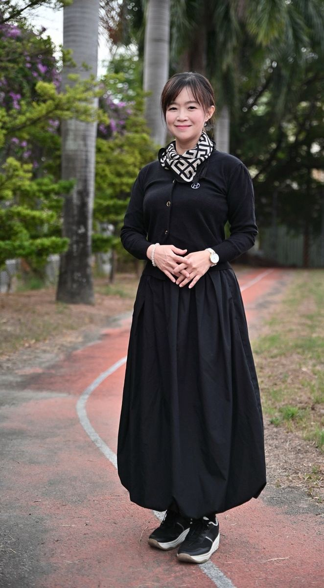

"The greatest charm of education is to let every student hold on to hope."「教育的最大魅力，是讓每一位學生擁有希望。」願成為鼓勵孩子學習、陪伴教師成長的優質校長。
Student-centerd, developing the whole child.
以學生為主體，發展全人教育。
Teaching every child by their needs, with care for those who need it most.
有教無類、因材施教，落實適性育才、弱勢關懷。
Built around our own teachers, students, and school context.
以師生為主體、學校情境為脈絡，發展學校本位課程。
Deepening ties with parents and the community, in a spirit of gratitude.
深耕家長會與社區，懷抱感恩，廣引統合社會資源。
Solid everyday teaching that nurtures capable, confident students.
力行正常教學，培育優質卓越的學生。
Broadening global vision, strengthening languages and self-directed tech learning — a foundation for global mobility.
拓展國際視野，強化多語文與科技自學能力，為未來的全球移動力奠基。
24 years in education across Kaohsiung and Changhua — as a homeroom teacher, advisory teacher, director, and curriculum supervisor.
B.S. in Civil Engineering — I-Shou University義守大學 土木工程學系（學士）
Elementary Teacher Education Program — National Chiayi University國立嘉義大學 國小師資班（結業）
M.S. in Applied Living Science — Tainan University of Technology台南應用科技大學 生活應用科學研究所（碩士）
Elementary Principal Training Program, Cohort 163 — Changhua County (2020)彰化縣國小校長儲訓班 第 163 期（2020）
After her assembly at Hsinmin Elementary, Dom Jones sat down with the principal to ask the question behind the work: why did you choose to lead a school — and what do English and international education mean for the children here?
Dom Jones 在新民國小的晨會之後，與校長坐下來對談：您為什麼選擇走上校長這條路？英語教育與國際教育，對這裡的孩子又意味著什麼？